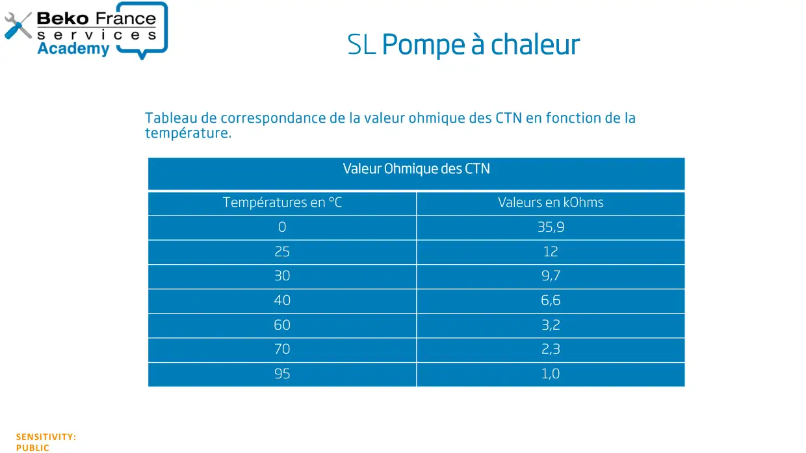

Valeurs sonde seche linge PAC

SENSITIVITY:PUBLICSL Pompe à chaleur PACTableau de correspondance de la valeur ohmique des CTN en fonction de latempérature.Valeur Ohmique des CTNTempératures en °CValeurs en kOhms035,92512309,7406,6603,2702,3951,0
1 / 1